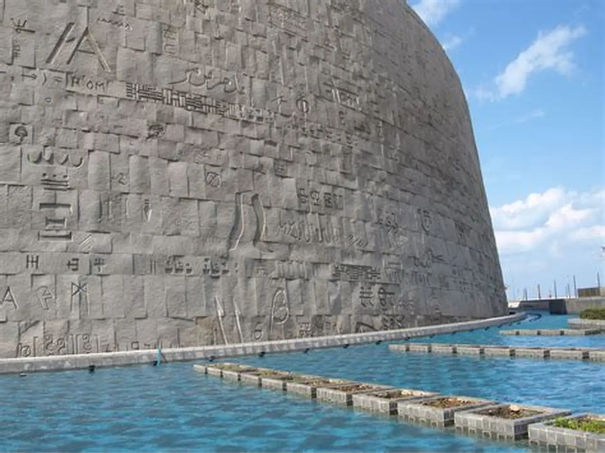
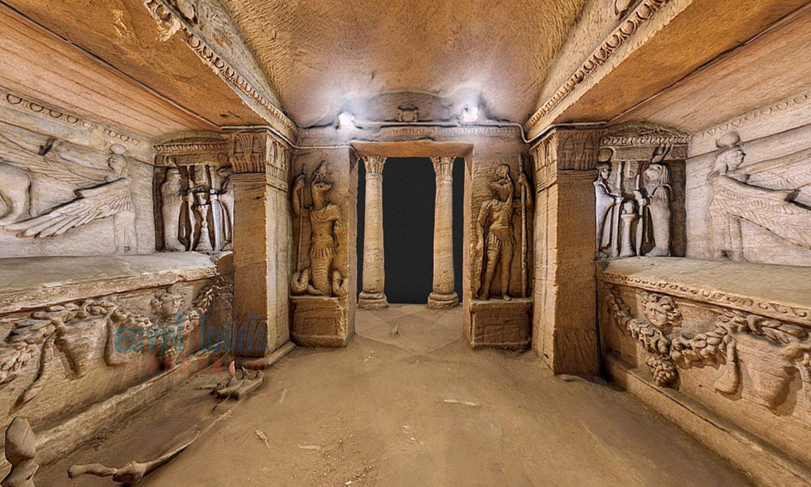
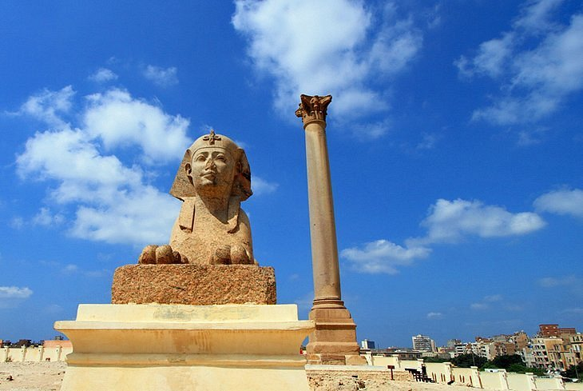
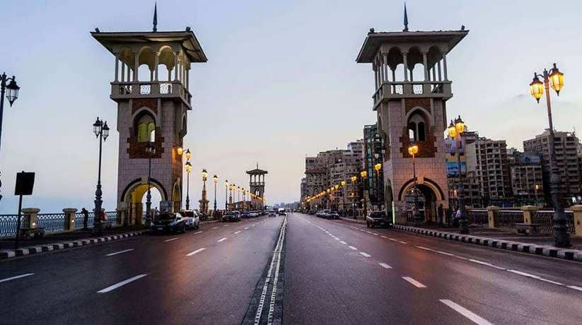

Bibliotheca Alexandrina
A modern architectural marvel built to commemorate the ancient Great Library. It serves as a major cultural center, housing millions of books, several museums, and a planetarium.
View on Google Maps
Qaitbay Citadel
This 15th-century fortress stands on the exact site of the ancient Pharos Lighthouse (one of the Seven Wonders). It offers sweeping views of the sea and the city's harbor.
View on Google Maps
Montaza Palace & Gardens
A royal retreat featuring lush gardens, rare plant species, and stunning Mediterranean architecture. It is the perfect place for a quiet walk by the royal beaches.
View on Google Maps
Catacombs of Kom El Shoqafa
Considered one of the Seven Wonders of the Middle Ages. This underground necropolis features a unique blend of Roman, Greek, and Ancient Egyptian art and architecture.
View on Google Maps
Pompey's Pillar
A massive triumphal column and one of the largest monolithic columns ever erected. It stands among the ruins of the Serapeum temple in the heart of old Alexandria.
View on Google Maps
Stanley Bridge
The first bridge in Egypt built over the sea. Its distinctive towers and elegant design make it an iconic spot for photos, especially when lit up at night.
View on Google Maps